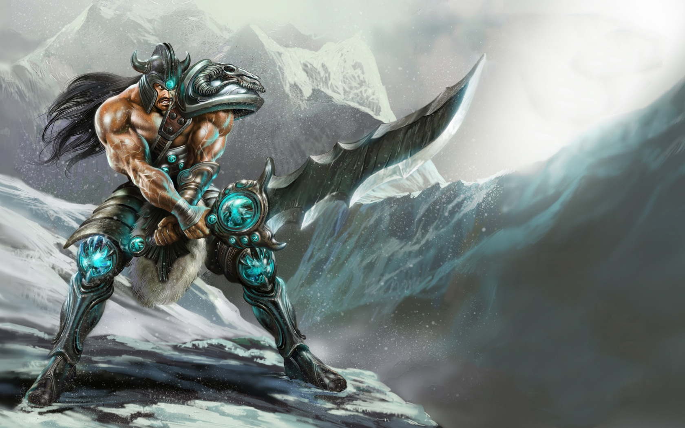
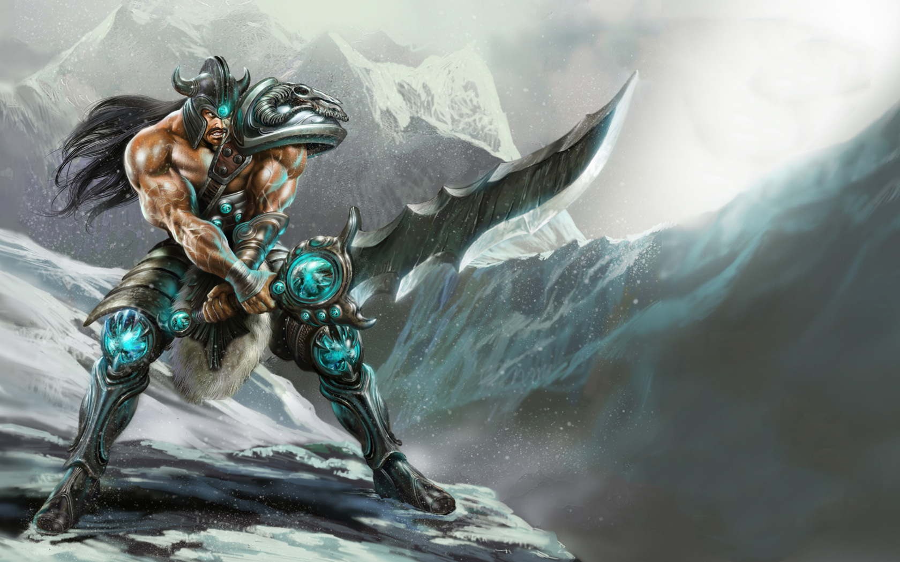
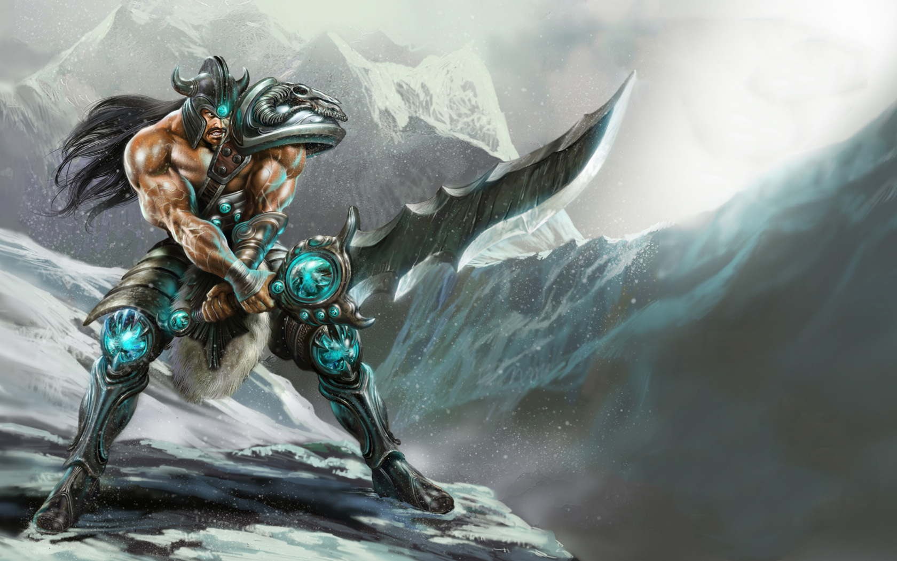

Fusão
Teemo é uma lenda entre seus irmãos e irmãs yordle de Bandópolis. No que diz respeito a todos os yordles, parece que lhe falta um ou outro parafuso. Ele demonstra e aproveita o companheirismo de sua raça ao mesmo tempo em que insiste em ir sozinho para missões de defesa da cidade.

Fusão